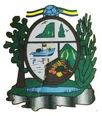

Ciudad cabecera del cantón San Cristóbal y capital de Galápagos, Ecuador, ubicada
en la costa sudoeste de la isla
Con una población de aproximadamente 7290 habitantes (censo 2022), es la segunda ciudad más grande
del archipiélago luego de Puerto Ayora
 Fundada en el siglo XIX por el general Villamil y nombrada en honor al expresidente
Fundada en el siglo XIX por el general Villamil y nombrada en honor al expresidente
Alfredo Baquerizo Moreno Su apodo local es “Cristóbal
PUERTO BAQUERIZO MORENO TE ESPERA